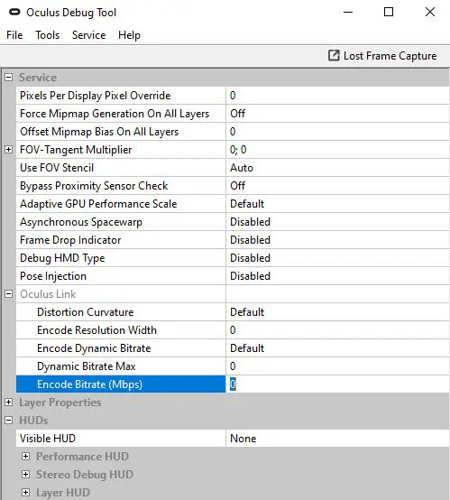

Primeros pasos para el usuario de PC VR
No todas las PC son compatibles con Oculus Link, incluso si son PC "Listos para VR". Para conectar sus auriculares Oculus Quest a su PC, necesitará las siguientes especificaciones de la computadora:
windows 10
Al menos 8 GB de RAM
Un puerto USB 3.0 de repuesto
-
Una CPU para VR que sea equivalente o superior a Intel i5-4590 o AMD Ryzen 5 1500X
-
Una tarjeta gráfica para VR superior a la NVidia GeForce 1080.
Software
Descarga la aplicación oficial de Oculus para PC, que es el software que ejecutará Oculus Link y te permitirá jugar juegos de PC VR en tus auriculares. Puede obtenerlo aquí, listado como descarga para Link Cable y Air Link. También querrá asegurarse de que su Quest esté actualizado con las actualizaciones de software, que puede verificar en el menú de configuración de los auriculares.
Router de wifi
Al igual que Virtual Desktop, Air Link requiere un buen enrutador Wi-Fi con una conexión de red interna estable para funcionar de manera confiable. Meta recomienda que utilice una red de 5 Ghz que se ejecute en un enrutador AC o AX. También se recomienda que la PC que ejecuta los juegos esté conectada al enrutador directamente a través de un cable Ethernet y no a Wi-Fi; se sabe que este último causa problemas de conexión. Meta también advierte que las redes de malla también pueden causar problemas con Air Link.
Habilitar Air Link en Quest/Emparejar tu Quest
Primero, asegúrese de que la aplicación Oculus para PC esté instalada, abierta y conectada a su red. Luego deberá habilitar Air Link en Quest, ya que la función aún es experimental y aún no se ha lanzado oficialmente por completo. Para hacer esto, vaya al menú Configuración en su Quest y luego diríjase a Funciones experimentales. En esta pestaña, habrá una opción para activar Air Link. Al encender Air Link, verá un cuadro de diálogo que le advierte sobre el equipo y la configuración necesarios para una experiencia óptima: seleccione continuar. Una vez encendido, puede acceder a Air Link desde el menú de configuración rápida de Quest, que se muestra a continuación, al que se puede acceder seleccionando la parte inferior izquierda de la barra de tareas de Quest. La primera vez que abra Air Link, tendrá que vincularlo con su PC. Seleccione su PC de la lista de dispositivos conectados en la red. Es posible que también deba confirmar un código de emparejamiento que se muestra en su PC.
Enlace aéreo inicial
Una vez encendido y emparejado, puede iniciar Air Link desde el menú Configuración rápida en la barra de herramientas de Quest en cualquier momento. Solo asegúrese de que su PC de escritorio esté encendida y que la aplicación Oculus esté abierta, y debería estar listo para comenzar. Una vez que se haya iniciado Air Link, el proceso para jugar juegos de realidad virtual para PC debe ser exactamente el mismo que usar un auricular de realidad virtual para PC de forma nativa o usar una conexión Oculus Link por cable. ¡Disfrutar!
Ajuste de la frecuencia de actualización y la resolución de renderizado de Air Link
Una vez que tenga Air Link en funcionamiento, puede cambiar entre frecuencias de actualización de 72 Hz (la opción predeterminada y recomendada), 80 Hz, 90 Hz y 120 Hz. Sin embargo, esto solo está disponible para los usuarios de Quest 2: aquellos que usan Quest original solo pueden ejecutar contenido a 72 Hz. Para hacer esto, conecte su Quest 2 a su PC a través de Air Link y vaya a la pestaña Dispositivos en la aplicación Oculus para PC.
Si hace clic en el auricular Quest activo, aparecerá una barra lateral de configuración. Haga clic en Preferencias de gráficos para ajustar la frecuencia de actualización y la resolución de representación, como se muestra en la imagen de arriba. Establecer estas opciones demasiado alto afectará el rendimiento; depende del hardware de su PC y, potencialmente, del juego que esté jugando, así que pruebe y ajuste en consecuencia.
Configuración de la herramienta de depuración
Si ha ajustado su tasa de bits de Oculus Link en la herramienta de depuración, deberá volver a establecerla en 0 para obtener el rendimiento adecuado de Air Link. La herramienta de depuración de Oculus se puede encontrar en Archivos de programa\Oculus\Support\oculus-diagnostics\.
Una vez que haya abierto la herramienta de depuración, busque la configuración de tasa de bits de codificación (Mbps) en Oculus Link; asegúrese de que esté configurada en 0 antes de usar Air Link para un rendimiento óptimo.
Ajuste de tasa de bits
También hay una nueva configuración en Oculus Dash que le permite ajustar la tasa de bits de Oculus Link mientras usa Air Link, lo que puede mejorar el rendimiento. La configuración se puede encontrar en el panel Air Link de Oculus Dash y le permitirá elegir entre una tasa de bits dinámica o una tasa de bits estática. La tasa de bits es la cantidad de datos que se transfieren a través de Air Link a su Quest: una tasa de bits más alta significará una calidad más alta, pero puede aumentar la latencia e introducir tartamudeos. Esta configuración deberá ajustarse caso por caso: el límite superior de su tasa de bits estará determinado por las especificaciones de su PC y cuánto puede manejar. Una tasa de bits dinámica elegirá automáticamente lo que es mejor de acuerdo con el rendimiento de su equipo en un momento dado; si no sabe lo que está haciendo y no quiere meterse con nada, use esta opción. Una tasa de bits estática le permitirá establecer un nivel de calidad constante, pero tiene el potencial de afectar el rendimiento. Si desea una tasa de bits estática, juegue con el control deslizante para encontrar una configuración que le brinde la mejor calidad sin comprometer el rendimiento. Si sube demasiado y Air Link se congela, la configuración se invertirá automáticamente en 10 segundos.